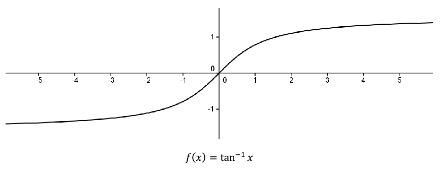

Section 10.4 The Supremum and the Extreme Value Theorem
Theorem 10.3.1 says that a continuous function on a closed, bounded interval must be bounded. Boundedness, in and of itself, does not ensure the existence of a maximum or minimum. We must also have a closed, bounded interval. To illustrate this, consider the continuous function
\(f(x)=\)tan
\(^{-1}x\) defined on the (unbounded) interval
\(\left(-\infty,\infty\right)\text{.}\)

This function is bounded between \(-\frac{\pi}{2}\)and \(\frac{\pi}{2}\text{,}\) but it does not attain a maximum or minimum as the lines \(y=\pm\frac{\pi}{2}\) are horizontal asymptotes. Notice that if we restricted the domain to a closed, bounded interval then it would attain its extreme values on that interval (as guaranteed by the EVT).
To find a maximum we need to find the smallest possible upper bound for the range of the function. This prompts the following definitions.
Definition 10.4.1.
Let \(S\subseteq\mathbb{R}\) and let \(b\) be a real number. We say that \(b\) is an upper bound of \(S\) provided \(b\geq x\) for all \(x\in S\text{.}\)
For example, if \(S=(0,1)\text{,}\) then any \(b\) with \(b\geq 1\) would be an upper bound of \(S\text{.}\) Furthermore, the fact that \(b\) is not an element of the set \(S\) is immaterial. Indeed, if \(T=[\,0,1]\text{,}\) then any \(b\) with \(b\geq 1\) would still be an upper bound of \(T\text{.}\) Notice that, in general, if a set has an upper bound, then it has infinitely many since any number larger than that upper bound would also be an upper bound. However, there is something special about the smallest upper bound.
Definition 10.4.2. Least Upper Bound Property (LUBP).
Let \(S\subseteq\mathbb{R}\) and let \(b\) be a real number. We say that \(b\) is the least upper bound of \(S\) provided
\(b\geq x\) for all \(x\in S\text{.}\) (\(b\) is an upper bound of \(S\))
If \(c\geq x\) for all \(x\in S\text{,}\) then \(c\geq b\text{.}\) (Any upper bound of \(S\) is at least as big as \(b\text{.}\))
In this case, we also say that \(b\) is the supremum of \(S\) and we write
\begin{equation*}
b=\sup\left(S\right)\text{.}
\end{equation*}
Notice that the definition really says that \(b\) is the smallest upper bound of \(S\text{.}\) Also notice that the second condition can be replaced by its contrapositive so we can say that \(b=\sup S\) if and only if
\(\displaystyle b\,\geq\,x\text{ for all } x\,\in S\)
If \(c\,\lt \,b\) then there exists \(x\,\in S\) such that \(c\,\lt \,x\text{.}\)
The second condition says that if a number \(c\) is less than \(b\text{,}\) then it can’t be an upper bound, so that \(b\) really is the smallest upper bound.
Also notice that the supremum of the set may or may not be in the set itself. This is illustrated by the examples above as in both cases, \(1=\sup(0,1)\) and \(1=\sup [0,1]\text{.}\) Obviously, a set which is not bounded above such as \(\mathbb{N}=\{1,\,2,\,3,\,\ldots\}\) cannot have a supremum. However, for non-empty sets which are bounded above, we have the following.
Theorem 10.4.3. The Least Upper Bound Property (LUBP).
Let \(S\) be a non-empty subset of \(\mathbb{R}\) which is bounded above. Then \(S\) has a supremum.
Sketch of Proof.
Since \(S\neq\emptyset\text{,}\) then there exists \(s\in S\text{.}\) Since \(S\) is bounded above then it has an upper bound, say \(b\text{.}\) We will set ourselves up to use the Nested Interval Property. With this in mind, let \(x_1=s\) and \(y_1=b\) and notice that \(\exists\) \(x\in S\) such that \(x\geq x_1\) (namely, \(x_1\) itself) and \(\forall\,x\in S\text{,}\) \(y_1\geq x\text{.}\) You probably guessed what’s coming next: let \(m_1\) be the midpoint of \([\,x_1,y_1]\text{.}\) Notice that either \(m_1\geq x,\,\forall\,x\in S\) or \(\exists\) \(x\in S\) such that \(x\geq m_1\text{.}\) In the former case, we relabel, letting \(x_2=x_1\) and \(y_2=m_1\text{.}\) In the latter case, we let \(x_2=m_1\) and \(y_2=y_1\text{.}\) In either case, we end up with \(x_1\leq x_2\leq y_2\leq y_1\text{,}\) \(y_2-x_2=\frac{1}{2}\left(y_1-x_1\right)\text{,}\) and \(\exists\) \(x\in S\) such that \(x\geq x_2\) and \(\forall\,x\in S\text{,}\) \(y_2\geq x\text{.}\) If we continue this process, we end up with two sequences, \(\left(x_n\right)\)and \(\left(y_n\right)\text{,}\) satisfying the following conditions:
\(\displaystyle x_1\leq x_2\leq x_3\leq\ldots\)
\(\displaystyle y_1\geq y_2\geq y_3\geq\ldots\)
\(\forall\) \(n\text{,}\) \(x_n\leq y_n\)
\(\displaystyle \lim_{n\rightarrow\infty}\left(y_n-x_n\right)=\lim_{n\rightarrow\infty} \frac{1}{2^{n-1}}\left(y_1-x_1\right)=0\)
\(\forall\) \(n,\exists\) \(x\in S\) such that \(x\geq x_n\) and \(\forall\,x\in S\text{,}\) \(y_n\geq x\text{,}\)
By properties 1-5 and the NIP there exists \(c\) such that \(x_n\leq c\leq y_n,\,\forall\,n\text{.}\) We will leave it to you to use property 5 to show that \(c=\sup S\text{.}\)
Problem 10.4.4.
Notice that we really used the fact that
\(S\) was non-empty and bounded above in the proof of
Theorem 10.4.3. This makes sense, since a set which is not bounded above cannot possibly have a least upper bound. In fact, any real number is an upper bound of the empty set so that the empty set would not have a least upper bound.
Corollary 10.4.5.
Let \((x_n)\) be a bounded, increasing sequence of real numbers. That is, \(x_1\leq x_2\leq x_3\leq\cdots\text{.}\) Then \((x_n)\) converges to some real number \(c\text{.}\)
Problem 10.4.6.
Hint.Let \(c=\sup\{x_n|\,n=1,2,3,\ldots\}\text{.}\) To show that \(\limit{n}{\infty}{x_n}=c\text{,}\) let \(\epsilon>0.\)Note that \(c-\epsilon\) is not an upper bound. You take it from here!
Problem 10.4.7.
Consider the following curious expression
\begin{equation*}
\sqrt{2+\sqrt{2+\sqrt{2+\sqrt{...}}}}\text{.}
\end{equation*}
We will use
Corollary 10.4.5 to show that this actually converges to some real number. After we know it converges we can actually compute what it is. Of course to do so, we need to define things a bit more precisely. With this in mind consider the following sequence
\(\left(x_n\right)\) defined as follows:
\begin{equation*}
x_1=\sqrt{2}
\end{equation*}
\begin{equation*}
x_{n+1}=\sqrt{2+x_n}\text{.}
\end{equation*}
Use induction to show that \(x_n\lt 2\) for \(n=1,\,2,\,3,\,\ldots\text{.}\)
Use the result from part (a) to show that \(x_n\lt x_{n+1}\) for \(n=1,\,2,\,3,\,\ldots\) .
From
Corollary 10.4.5, we have that
\(\left(x_n\right)\) must converge to some number
\(c\text{.}\) Use the fact that
\(\left(x_{n+1}\right)\) must converge to
\(c\) as well to compute what
\(c\) must be.
We now have all the tools we need to tackle the Extreme Value Theorem.
Theorem 10.4.8.
Extreme Value Theorem (EVT)
Suppose \(f\) is continuous on \([\,a,b]\text{.}\) Then there exists \(c,d\in[\,a,b]\) such that \(f(d)\leq f(x)\leq f(c)\text{,}\) for all \(x\in[\,a,b]\text{.}\)
Sketch of Proof.
We will first show that
\(f\) attains its maximum. To this end, recall that
Theorem 10.3.1 tells us that
\(f[\,a,b]=\{f(x)|\,x\in[\,a,b]\}\) is a bounded set. By the LUBP,
\(f[\,a,b]\) must have a least upper bound which we will label
\(s\text{,}\) so that
\(s=\sup f[\,a,b]\text{.}\) This says that
\(s\geq f(x)\text{,}\)for all
\(x\in[\,a,b]\text{.}\) All we need to do now is find a
\(c\in[\,a,b]\) with
\(f(c)=s\text{.}\) With this in mind, notice that since
\(s=\sup f[\,a,b]\text{,}\) then for any positive integer
\(n\text{,}\) \(s-\frac{1}{n}\) is not an upper bound of
\(f[\,a,b]\text{.}\) Thus there exists
\(x_n\in[\,a,b]\) with
\(\,s-\frac{1}{n}\lt f(x_n)\leq s\text{.}\) Now, by the Bolzano-Weierstrass Theorem,
\(\left(x_n\right)\) has a convergent subsequence
\(\,\left(x_{n_k}\right)\) converging to some
\(c\in[\,a,b]\text{.}\) Using the continuity of
\(f\) at
\(c\text{,}\) you should be able to show that
\(f(c)=s\text{.}\) To find the minimum of
\(f\text{,}\) find the maximum of
\(-f\text{.}\)
Problem 10.4.9.
Notice that we used the NIP to prove both the Bolzano-Weierstrass Theorem and the LUBP. This is really unavoidable, as it turns out that all of those statements are equivalent in the sense that any one of them can be taken as the completeness axiom for the real number system and the others proved as theorems. This is not uncommon in mathematics, as people tend to gravitate toward ideas that suit the particular problem they are working on. In this case, people realized at some point that they needed some sort of completeness property for the real number system to prove various theorems. Each individual’s formulation of completeness fit in with his understanding of the problem at hand. Only in hindsight do we see that they were really talking about the same concept: the completeness of the real number system. In point of fact, most modern textbooks use the LUBP as the axiom of completeness and prove all other formulations as theorems. We will finish this section by showing that either the Bolzano-Weierstrass Theorem or the LUBP can be used to prove the NIP. This says that they are all equivalent and that any one of them could be taken as the completeness axiom.
Problem 10.4.10.
Use the Bolzano-Weierstrass Theorem to prove the NIP. That is, assume that the Bolzano-Weierstrass Theorem holds and suppose we have two sequences of real numbers, \(\left(x_n\right)\) and \(\left(y_n\right)\text{,}\) satisfying:
\(\displaystyle x_1\le x_2 \le x_3 \le \ldots\)
\(\displaystyle y_1\ge y_2 \ge y_3 \ge \ldots\)
\(\displaystyle \forall\ n,\ x_n\le y_n\)
\(\displaystyle\lim_{n\rightarrow\infty}\left(y_n-x_n\right) = 0\text{.}\)
Prove that there is a real number \(c\) such that \(x_n\le c\le y_n\text{,}\) for all \(n\text{.}\)
Since the Bolzano-Weierstrass Theorem and the Nested Interval Property are equivalent, it follows that the Bolzano-Weierstrass Theorem will not work for the rational number system.
Problem 10.4.11.
Find a bounded sequence of rational numbers such that no subsequence of it converges to a rational number.
Problem 10.4.12.
Use the Least Upper Bound Property to prove the Nested Interval Property. That is, assume that every non-empty subset of the real numbers which is bounded above has a least upper bound; and suppose that we have two sequences of real numbers \(\left(x_n\right)\) and \(\left(y_n\right)\text{,}\) satisfying:
\(\displaystyle x_1\le x_2 \le x_3 \le \ldots\)
\(\displaystyle y_1\ge y_2 \ge y_3 \ge \ldots\)
\(\displaystyle \forall\ n, x_n\le y_n\)
\(\displaystyle\lim_{n\rightarrow\infty}\left(y_n-x_n\right) = 0\text{.}\)
Prove that there exists a real number \(c\) such that \(x_n\le c\le y_n\text{,}\) for all n. (Again, the \(c\) will, of necessity, be unique, but don’t worry about that.)
Problem 10.4.13.
Since the LUBP is equivalent to the NIP it does not hold for the rational number system. Demonstrate this by finding a non-empty set of rational numbers which is bounded above, but whose supremum is an irrational number.
We have the machinery in place to clean up a matter that was introduced in
Chapter 3. If you recall (or look back) we introduced the Archimedean Property of the real number system. This property says that given any two positive real numbers
\(a, b\text{,}\) there exists a positive integer
\(n\) with
\(na>b\text{.}\) As we mentioned in
Chapter 3, this was taken to be intuitively obvious. The analogy we used there was to emptying an ocean
\(b\) with a teaspoon
\(a\) provided we are willing to use it enough times
\(n\text{.}\) The completeness of the real number system allows us to prove it as a formal theorem.
Theorem 10.4.14.
Archimedean Property of \(\RR\)
Given any positive real numbers \(a\) and \(b\text{,}\) there exists a positive integer \(n\text{,}\) such that \(na>b\text{.}\)
Problem 10.4.15.
Hint.Assume that there are positive real numbers \(a\) and \(b\text{,}\) such that \(na\le b\) \(\forall n\in \NN\text{.}\) Then \(\NN\) would be bounded above by \(b/a\text{.}\) Let \(s=\sup(\NN)\) and consider \(s-1\text{.}\)
Given what we’ve been doing, one might ask if the Archimedean Property is equivalent to the LUBP (and thus could be taken as an axiom). The answer lies in the following problem.
Problem 10.4.16.
Does \(\QQ\) satisfy the Archimedean Property and what does this have to do with the question of taking the Archimedean Property as an axiom of completeness?